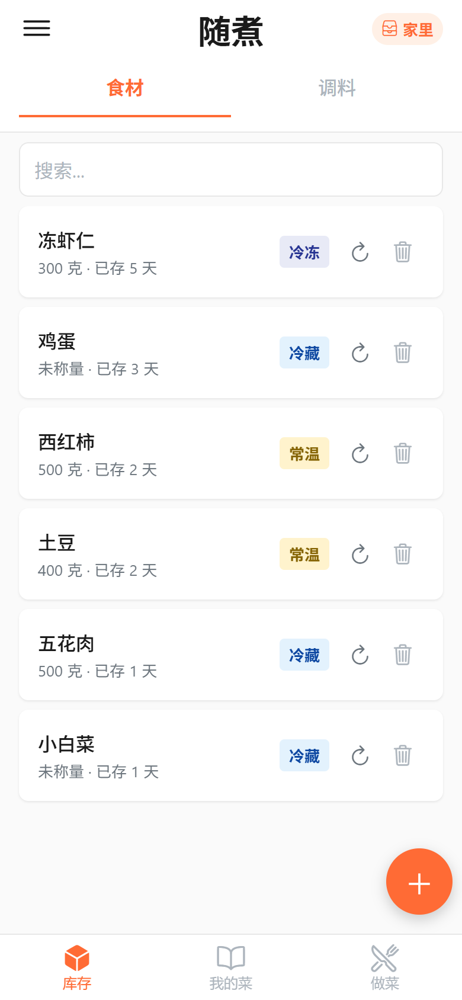
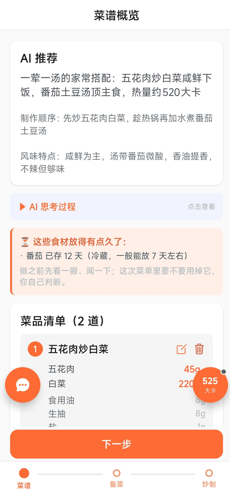
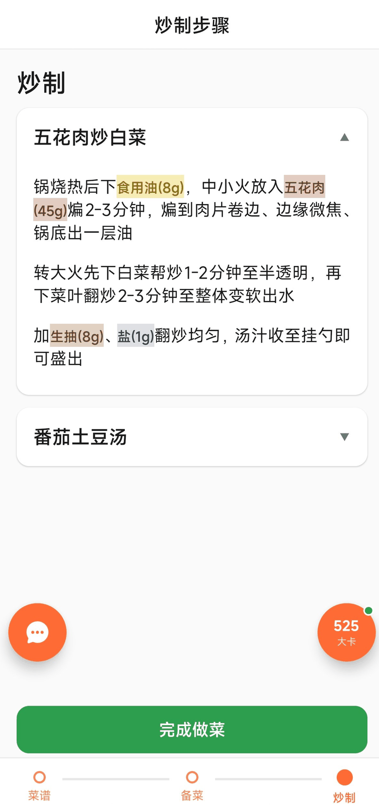

用你冰箱里现有的东西，一次给你整桌菜 —— 然后一页一页带你做完。



手动录入，或者对着冰箱拍一张，AI 认出食材和调料，你确认后才入库。
几道菜搭配好的一桌饭：谁先做、缺什么要买、每道多少克、热量多少。
菜谱 → 备菜 → 炒制，一页一页翻；中途退出去，下次接着做。
每道菜自动进「我的菜」，下次复用只调份量，换几个人吃都不用重配。
下载文件托管在 GitHub，国内访问不稳定。可以试试上面的「GitHub 官方页面」，或者过一会儿再试；镜像地址会陆续补到这个按钮上。
大概率是设备不是 64 位 arm64（这个包只支持 arm64）。2018 年之后的主流安卓手机都是。
检查设置里有没有填 API Key，以及余额是否够。应用不会替你去请求任何你没配置的地址。
不会。库存、菜谱、记录全部存在手机本地，代码在 GitHub 上可以自己看。